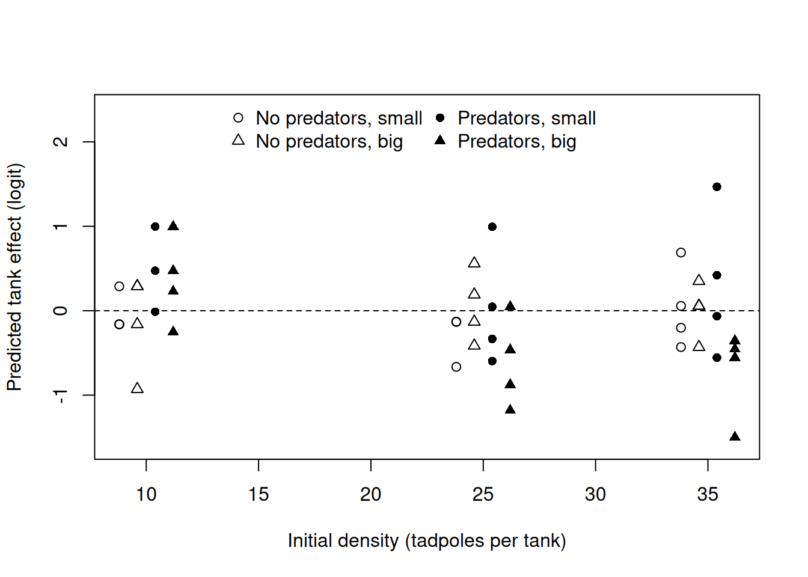
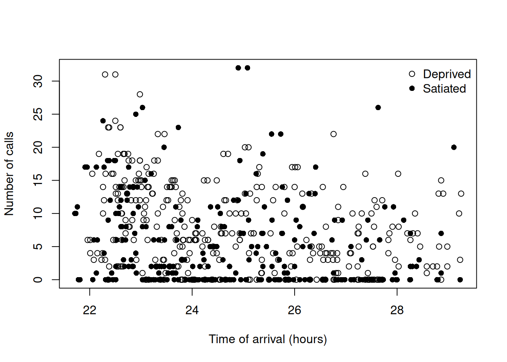
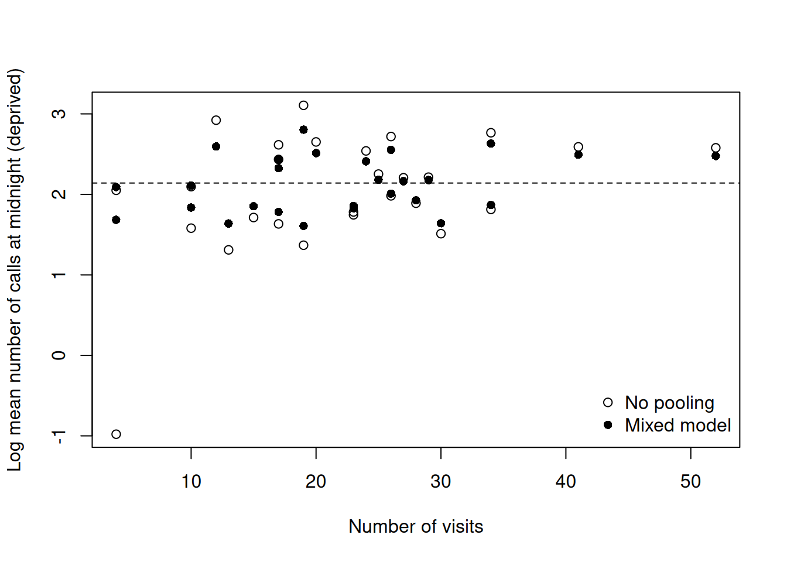
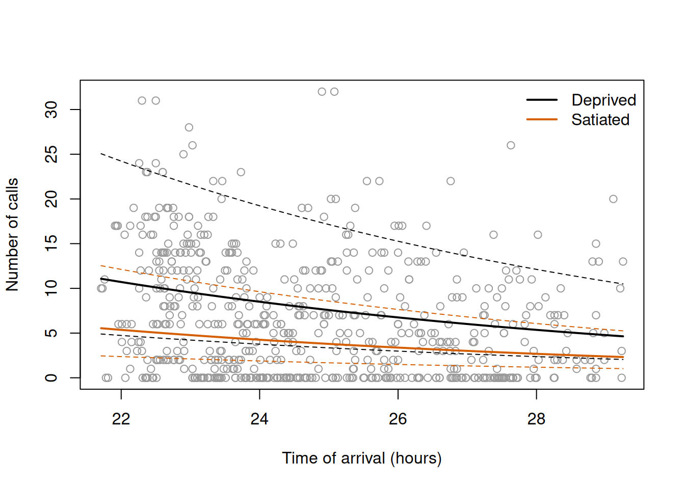
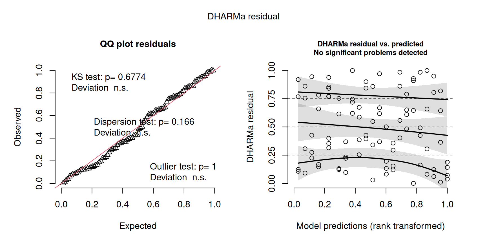

# Load RTMB first and RTMBdist second.
library(RTMB)
library(RTMBdist)
# Connect a likelihood to a data set.
cmb = function(f, d) function(p) f(p, d)Chapter 7: Grouped ecological response curves — solutions
The fully worked first exercise is on the student practical page. These solutions use the same data, tasks and seeds as Exercises 2–5 on that page. Exercises 1 to 4 are the core of the practical and Exercise 5 is extra practice.
As on that page, we load RTMB first and RTMBdist second, and define the helper cmb() that connects a likelihood to a data set:
1 Exercise 2: Survival of tadpoles in tanks
The data set ReedfrogPred in the package emdbook contains the results of laboratory experiments on the predation of tadpoles of the African reed frog Hyperolius spinigularis (Vonesh and Bolker 2005). Each of the 48 rows is a tank: density is the number of tadpoles placed in the tank at the start (10, 25 or 35), pred says whether predators were present (pred) or not (no), size is the size of the tadpoles (small or big), and surv is the number of tadpoles that survived. Load the data with data(ReedfrogPred, package = "emdbook").
In Exercise 1 of the Chapter 4 practical we fitted Binomial models with one probability of survival for all the tadpoles of a treatment, which treat the tadpoles of all the tanks as independent, and found that the numbers of survivors vary among tanks much more than a Binomial model allows. In Chapter 6 we described this kind of variation with a Beta-Binomial distribution. Here we use all 48 tanks with a model in which the probability of survival depends on the presence of predators and varies among tanks. Let \(X_i\) be the number of survivors in tank \(i\), which started with \(n_i\) tadpoles, and \(P_i\) be 1 if the tank had predators and 0 otherwise:
\[ u_i\sim\operatorname{Normal}\left(0,\sigma^2_{\mathrm{tank}}\right), \qquad X_i\mid u_i\sim\operatorname{Binomial}\left(n_i,\,p_i\right), \qquad \operatorname{logit}(p_i)=\beta_0+\beta_{\mathrm{pred}}P_i+u_i, \]
where \(u_i\) is the deviation of tank \(i\) on the logit scale and \(\sigma^2_{\mathrm{tank}}\) is the variance of these deviations among tanks.
- On paper, write the marginal probability of the number of survivors of one tank as an integral over its deviation. Each tank is observed once: what does the random effect describe, and how does this model differ from a Beta-Binomial model with the same effect of predators?
- Fit the model with tank effects with
random = "u", and the Beta-Binomial model, withdbetabinom()of RTMBdist and the precision \(\kappa\) of Chapter 6, in which the mean probability of survival has the same effect of predators on the logit scale. Check the convergence and report the estimates. - Compare the two models with AIC. Why can AIC compare a model with random effects and a model without them here?
- Calculate the probability of survival of a typical tank (\(u_i=0\)) with and without predators. Then set seed 721 and calculate the mean probability of survival over tanks, by simulating one million tank deviations from their distribution. Why do the typical and the mean probability differ without predators and hardly with them? Compare both with the mean probabilities of the Beta-Binomial model.
- Plot the predicted tank effects against the initial density, with a different symbol for each combination of predators and size of the tadpoles. Does a property of the tanks seem to explain part of the variation among them?
1.1 Solution
1.1.1 Question 1
For a given deviation \(u\), the number of survivors of tank \(i\) is Binomial with the probability \(p_i(u)=1/\left(1+e^{-(\beta_0+\beta_{\mathrm{pred}}P_i+u)}\right)\), the inverse logit of the linear predictor. The deviation is not observed, so the marginal probability of the count averages the Binomial probability over the Normal distribution of the deviations:
\[ P(X_i=x_i)=\int_{-\infty}^{\infty} \binom{n_i}{x_i}p_i(u)^{x_i}\left(1-p_i(u)\right)^{n_i-x_i} f(u\mid\sigma_{\mathrm{tank}})\,du, \]
where \(f(u\mid\sigma_{\mathrm{tank}})\) is the Normal density with mean zero and standard deviation \(\sigma_{\mathrm{tank}}\). This integral has no closed form, so RTMB approximates it with the Laplace approximation.
Each tank gives one count, but the count is made of \(n_i\) tadpoles whose fates are independent for a given probability. For a given probability the Binomial distribution fixes how much the count can vary, so any variation among tanks of the same treatment beyond that is variation in the probability of survival among tanks, and that is what the random effect describes: the conditions that the tadpoles of a tank share and that other tanks do not. The Beta distribution of a Beta-Binomial model describes the same thing, so the two models answer the same question. They differ in three ways. The probabilities of the tanks follow a Normal distribution on the logit scale in one model and a Beta distribution on the probability scale in the other, which are different shapes. The integral of the Beta-Binomial model has a closed form, whereas that of the mixed model is approximated. And \(\beta_0\) and \(\beta_{\mathrm{pred}}\) do not mean the same thing: in the mixed model they give the probability of a typical tank, with \(u_i=0\), whereas in the Beta-Binomial model they give the mean probability of the tanks (question 4).
1.1.2 Question 2
The list of data holds the number of survivors and of tadpoles of each tank and an indicator of predators. The joint NLL has the density of the deviations first, as in the theory:
# Load the reed frog data and put the survivors, the initial number of tadpoles and an
# indicator of predators (1 with predators, 0 without) in a list of data.
data(ReedfrogPred, package = "emdbook")
tank_data = list(
survivors = ReedfrogPred$surv,
tadpoles = ReedfrogPred$density,
predators = as.numeric(ReedfrogPred$pred == "pred")
)
# Joint NLL of the Binomial model with a random effect for each tank on the logit scale.
tank_nll = function(parms, data) {
getAll(parms, data)
sd_tank = exp(log_sd_tank)
# Minus the log density of the deviations of the tanks, before they are used.
nll = -sum(dnorm(x = u, mean = 0, sd = sd_tank, log = TRUE))
# Probability of survival in each tank, and minus the log probability of its survivors.
p = plogis(beta_0 + beta_pred * predators + u)
nll - sum(dbinom(x = survivors, size = tadpoles, prob = p, log = TRUE))
}We start from a probability of 0.5 in both treatments (logit 0), a standard deviation among tanks of 0.5 on the logit scale and one deviation of zero for each of the 48 tanks:
# Process the joint NLL, integrating out the deviations of the tanks, and fit it.
tank_obj = MakeADFun(
cmb(tank_nll, tank_data),
list(beta_0 = 0, beta_pred = 0, log_sd_tank = log(0.5), u = rep(0, 48)),
random = "u",
silent = TRUE
)
tank_fit = optim(
par = tank_obj$par,
fn = tank_obj$fn,
gr = tank_obj$gr,
method = "BFGS"
)
tank_fit$convergence[1] 0# Standard errors on the optimised scales, and the standard deviation among tanks.
tank_sd = sdreport(tank_obj)
summary(tank_sd, select = "fixed") Estimate Std. Error
beta_0 2.6980077 0.2422542
beta_pred -2.6778992 0.3043952
log_sd_tank -0.2537464 0.1721570exp(tank_fit$par[["log_sd_tank"]])[1] 0.7758885The fit converged. Predators lower the logit of the probability of survival of a typical tank by 2.68 (standard error 0.30), and the tanks vary around their typical value with a standard deviation of 0.78 on the logit scale.
In the Beta-Binomial model of Chapter 6, the probability \(p_i\) is the mean of a Beta distribution with precision \(\kappa\), whose shape parameters are \(\kappa p_i\) and \(\kappa(1-p_i)\). We give \(p_i\) the same linear predictor on the logit scale, without the deviations:
# NLL of the Beta-Binomial model: the logit of the mean probability depends on predators.
betabinomial_nll = function(parms, data) {
getAll(parms, data)
p = plogis(beta_0 + beta_pred * predators)
kappa = exp(log_kappa)
-sum(dbetabinom(
x = survivors, size = tadpoles, shape1 = kappa * p, shape2 = kappa * (1 - p), log = TRUE
))
}
# Process the NLL, starting from logit 0 and a precision of 10, and fit it.
betabinomial_obj = MakeADFun(
cmb(betabinomial_nll, tank_data),
list(beta_0 = 0, beta_pred = 0, log_kappa = log(10)),
silent = TRUE
)
betabinomial_fit = optim(
par = betabinomial_obj$par,
fn = betabinomial_obj$fn,
gr = betabinomial_obj$gr,
method = "BFGS"
)
betabinomial_fit$convergence[1] 0# Estimates: the logits, and the precision on the original scale.
betabinomial_fit$par beta_0 beta_pred log_kappa
2.213874 -2.207554 2.257509 exp(betabinomial_fit$par[["log_kappa"]])[1] 9.559244This fit converged too. The effect of predators on the logit scale is smaller (\(-2.21\)), and the precision is about 9.6, which allows much variation among tanks (Chapter 6 found \(\hat\kappa\approx26\) for the tanks of the functional response experiment).
1.1.3 Question 3
Both models have \(K=3\) parameters: \(\beta_0\), \(\beta_{\mathrm{pred}}\) and either \(\sigma_{\mathrm{tank}}\) or \(\kappa\). The minimum of each NLL is minus a maximum log-likelihood:
# AIC of the two models, with K = 3 parameters each.
k_tanks = c(mixed = length(tank_fit$par), betabinomial = length(betabinomial_fit$par))
nll_tanks = c(mixed = tank_fit$value, betabinomial = betabinomial_fit$value)
2 * k_tanks + 2 * nll_tanks mixed betabinomial
225.7998 233.9377 AIC prefers the model with Normal tank deviations on the logit scale by about 8 units. AIC can compare the two models because both likelihoods are probabilities of the same thing: the counts of the 48 tanks, each with the variation of its probability integrated out. In the Beta-Binomial model the integral is done exactly, and in the mixed model by the Laplace approximation, but both are marginal likelihoods of a tank whose probability is not known. Neither model is a special case of the other at the boundary of a parameter, so the problem of the comparison of a mixed model with complete pooling does not arise. The difference does carry the error of the Laplace approximation, which the theory says is less accurate for counts near their bounds, as in the tanks without predators where nearly every tadpole survived.
1.1.4 Question 4
The probability of survival of a typical tank is the inverse logit of the linear predictor with \(u_i=0\). The mean probability over tanks averages the inverse logit over the distribution of the deviations, which we approximate by the average over one million simulated deviations:
# Probability of survival of a typical tank, without and with predators.
logit_typical = c(
no = tank_fit$par[["beta_0"]],
pred = tank_fit$par[["beta_0"]] + tank_fit$par[["beta_pred"]]
)
plogis(logit_typical) no pred
0.936909 0.505027 # Mean probability of survival over tanks, from one million simulated tank deviations.
set.seed(seed = 721)
tank_deviations = rnorm(n = 1e6, mean = 0, sd = exp(tank_fit$par[["log_sd_tank"]]))
c(
no = mean(plogis(logit_typical[["no"]] + tank_deviations)),
pred = mean(plogis(logit_typical[["pred"]] + tank_deviations))
) no pred
0.9211021 0.5048173 # Mean probability of survival under the Beta-Binomial model.
plogis(c(
no = betabinomial_fit$par[["beta_0"]],
pred = betabinomial_fit$par[["beta_0"]] + betabinomial_fit$par[["beta_pred"]]
)) no pred
0.9014885 0.5015801 Without predators, a typical tank has a probability of survival of 0.937, but the mean over tanks is 0.921. With predators both are about 0.505. The inverse logit is a curve: it is almost a straight line around a probability of 0.5, where deviations of the same size above and below the typical value change the probability by about the same amount, so they average out. Near one it flattens, so a tank with a negative deviation loses more probability than a tank with an equal positive deviation gains, and the mean lies below the typical value. This is Jensen’s inequality (see the box in Chapter 4), as for the median and the mean asymptote of the theory. The typical tank answers the question of what happens in a tank of median conditions; the mean answers the question of what fraction of the tadpoles in many tanks of equal size is expected to survive. The Beta-Binomial model gives mean probabilities of 0.901 and 0.502: it agrees with the mixed model with predators, and without predators it gives a lower mean, because its Beta distribution of the tank probabilities has another shape than the Normal distribution on the logit scale.
1.1.5 Question 5
The predicted tank effects are the rows of summary() with select = "random". To keep the symbols of the four combinations apart, we shift them slightly along the axis of density:
# Predicted tank effects and their standard errors.
tank_effects = summary(tank_sd, select = "random")
range(tank_effects[, "Std. Error"])[1] 0.3484849 0.6924917# Combination of predators and size of each tank, its symbol and a small shift along x.
combination = paste(ReedfrogPred$pred, ReedfrogPred$size)
combination_names = c("no small", "no big", "pred small", "pred big")
combination_number = match(combination, combination_names)
shift = c(-1.2, -0.4, 0.4, 1.2)
symbols = c(1, 2, 16, 17)
plot(ReedfrogPred$density + shift[combination_number], tank_effects[, "Estimate"],
pch = symbols[combination_number], ylim = c(-1.6, 2.4),
xlab = "Initial density (tadpoles per tank)", ylab = "Predicted tank effect (logit)")
abline(h = 0, lty = 2)
legend("top", legend = c("No predators, small", "No predators, big",
"Predators, small", "Predators, big"),
pch = symbols, ncol = 2, bty = "n")
# Mean predicted effect for each combination of predators and size.
tapply(tank_effects[, "Estimate"], list(ReedfrogPred$size, ReedfrogPred$pred), mean) no pred
small -0.09486863 0.3197643
big -0.02280317 -0.3243567
Without predators the predicted effects scatter around zero, with no difference between the two sizes. With predators, the tanks with small tadpoles tend to have positive effects (a mean of 0.32 on the logit scale) and those with big tadpoles negative ones (a mean of \(-0.32\)), most clearly at densities of 25 and 35 tadpoles, whereas at a density of 10 most tanks with predators have positive effects, whatever the size. So the size of the tadpoles, and perhaps the density, seem to explain part of the variation among the tanks with predators. They could enter the model as group-level predictors on the logit scale, with their interactions with predators, as origin and chilling did in the theory, and the models could then be compared with this one by AIC. The plot suggests this, but it does not show it: the predicted effects are shrunk towards zero and have standard errors between 0.35 and 0.69, so a pattern among them is only a lead to follow with a model.
2 Exercise 3: Begging calls at owl nests
The data set Owls in the package glmmTMB contains 599 visits of a parent to 27 nests of barn owls, with between 4 and 52 visits per nest (Roulin and Bersier 2007). For each visit, SiblingNegotiation is the number of calls made by the nestlings, FoodTreatment says whether the nestlings had been fed (Satiated) or deprived of food (Deprived), ArrivalTime is the time at which the parent arrived, in hours (values above 24 are after midnight, so 25.5 is half past one in the morning), and Nest names the nest. Load the data with data(Owls, package = "glmmTMB").
The Chapter 3 practical and Chapter 4 used only the visits of the female parent to satiated broods, and treated them as i.i.d., although visits to the same nest may resemble each other. Here we use all 599 visits and describe the nests. Let \(X_{ij}\) be the number of calls at visit \(i\) to nest \(j\), \(S_{ij}\) be 1 if the brood was satiated and 0 if it was deprived, and \(t_{ij}\) be the time of arrival. We use a Negative Binomial model with mean \(\mu_{ij}\) and shape \(k\) for a given nest deviation,
\[ u_j\sim\operatorname{Normal}\left(0,\sigma^2_{\mathrm{nest}}\right), \qquad X_{ij}\mid u_j\sim\operatorname{NegBin}\left(\mu_{ij},k\right), \qquad \log(\mu_{ij})=\log(\mu_0)+\beta_{\mathrm{sat}}S_{ij}+\beta_{\mathrm{time}}\left(t_{ij}-24\right)+u_j, \]
where \(\mu_0\) is the expected number of calls at a visit at midnight to a deprived brood in a typical nest. Nests also differ in the number of nestlings (BroodSize), which we do not model; the nest deviations include its effect.
- What is the observational unit, and what is the group? Which predictors are measured on the visits and which on the nests? Count the visits per nest, and plot the number of calls against the time of arrival, with a different symbol for each food treatment.
- Fit the model without nest deviations (with \(u_j=0\) for all nests) and with them, with
dnbinom2()of RTMBdist. Check the convergence, report the effects of food and time as factors by which they multiply the expected number of calls, and compare the two models with AIC. What does \(\hat\sigma_{\mathrm{nest}}\) say about the nests? - Fit the model with one log mean \(\log(\mu_{0j})\) for each nest and no distribution of nest values (no pooling), with the same effects of food and time. Plot, against the number of visits of each nest, its log mean without pooling and its predicted log mean \(\log(\hat\mu_0)+\hat u_j\) under the mixed model, with a line at the typical value \(\log(\hat\mu_0)\). Which nests are pulled most towards the typical value, and why?
- Draw the expected number of calls against the time of arrival for deprived and for satiated broods in a typical nest, with the range that contains the curves of 95% of new nests, over the observations.
2.1 Solution
2.1.1 Question 1
The observational unit is one visit of a parent to a nest, and the group is the nest: the visits to a nest share its brood, its site and its parents. Nest is an unordered factor, so as.numeric() gives the position of the level of each visit, a number from 1 to 27. We put the calls, an indicator of satiated broods, the time of arrival and the nest in a list of data, and count the visits of each nest and the nests that have visits under both food treatments:
# Load the owl data and put the calls, the food treatment (1 satiated, 0 deprived), the
# time of arrival (hours) and the nest of each visit in a list of data.
data(Owls, package = "glmmTMB")
nest_names = levels(Owls$Nest)
owl_data = list(
calls = Owls$SiblingNegotiation,
satiated = as.numeric(Owls$FoodTreatment == "Satiated"),
time = Owls$ArrivalTime,
nest = as.numeric(Owls$Nest)
)
# Number of visits of each nest.
n_visits = as.numeric(table(owl_data$nest))
range(n_visits)[1] 4 52# Number of nests with visits under both food treatments.
nest_food = table(owl_data$nest, owl_data$satiated)
sum(nest_food[, 1] > 0 & nest_food[, 2] > 0)[1] 27Every nest has visits under both treatments, so the food treatment changes within a nest and is measured on the visits, as the time of arrival is. The number of nestlings is measured on the nests: it is the same at every visit to a nest. The nests have between 4 and 52 visits, so they contribute very different amounts of information.
# Calls against the time of arrival, with a filled symbol for satiated broods.
plot(calls ~ time, data = owl_data, pch = ifelse(owl_data$satiated == 1, 16, 1),
xlab = "Time of arrival (hours)", ylab = "Number of calls")
legend("topright", legend = c("Deprived", "Satiated"), pch = c(1, 16), bty = "n")
The counts vary widely at every time, from zero to more than 30 calls, and many visits have no calls at all. Satiated broods tend to call less, and the calls seem to become fewer later in the night.
2.1.2 Question 2
The model without nest deviations is a Negative Binomial model with the log mean as a linear function of the two predictors, with the time measured from midnight so that \(\mu_0\) is the expected number at midnight. dnbinom2() takes the mean and the shape:
# NLL of the Negative Binomial model without nest deviations.
owl_nll = function(parms, data) {
getAll(parms, data)
mu = exp(log_mu0 + beta_sat * satiated + beta_time * (time - 24))
-sum(dnbinom2(x = calls, mu = mu, size = exp(log_k), log = TRUE))
}
# Joint NLL with a random effect for each nest on the log scale of the mean.
nest_nll = function(parms, data) {
getAll(parms, data)
sd_nest = exp(log_sd_nest)
# Minus the log density of the deviations of the nests, before they are used.
nll = -sum(dnorm(x = u, mean = 0, sd = sd_nest, log = TRUE))
# u[nest] is the deviation of the nest of each visit.
mu = exp(log_mu0 + beta_sat * satiated + beta_time * (time - 24) + u[nest])
nll - sum(dnbinom2(x = calls, mu = mu, size = exp(log_k), log = TRUE))
}We start from a mean of 5 calls, no effects, a shape of 1 and, for the mixed model, a standard deviation among nests of 0.5 on the log scale:
# Starting values shared by the two models.
owl_start = list(log_mu0 = log(5), beta_sat = 0, beta_time = 0, log_k = 0)
# Fit the model without nest deviations.
owl_obj = MakeADFun(cmb(owl_nll, owl_data), owl_start, silent = TRUE)
owl_fit = optim(par = owl_obj$par, fn = owl_obj$fn, gr = owl_obj$gr, method = "BFGS")
# Fit the model with nest deviations, integrating them out.
nest_obj = MakeADFun(
cmb(nest_nll, owl_data),
c(owl_start, list(log_sd_nest = log(0.5), u = rep(0, 27))),
random = "u",
silent = TRUE
)
nest_fit = optim(par = nest_obj$par, fn = nest_obj$fn, gr = nest_obj$gr, method = "BFGS")
c(owl = owl_fit$convergence, nest = nest_fit$convergence) owl nest
0 0 Both fits converged. The effects are on the log scale of the mean, so their exponentials are the factors by which they multiply the expected number of calls, and we calculate their Wald intervals on the log scale and transform the endpoints back:
# Estimates and standard errors of the model with nest deviations.
nest_sd = sdreport(nest_obj)
nest_summary = summary(nest_sd, select = "fixed")
# Factors of food and of one hour of time, with 95% Wald intervals from the log scale.
critical_value = qnorm(p = 0.975)
effect_rows = c("beta_sat", "beta_time")
exp(cbind(
factor = nest_summary[effect_rows, "Estimate"],
lower = nest_summary[effect_rows, "Estimate"] -
critical_value * nest_summary[effect_rows, "Std. Error"],
upper = nest_summary[effect_rows, "Estimate"] +
critical_value * nest_summary[effect_rows, "Std. Error"]
)) factor lower upper
beta_sat 0.5003787 0.4057774 0.6170349
beta_time 0.8910049 0.8479723 0.9362214# The other estimates on the original scale, next to those without nest deviations.
rbind(
owl = c(exp(owl_fit$par[c("log_mu0", "log_k")]), owl_fit$par[effect_rows], sd_nest = NA),
nest = c(exp(nest_fit$par[c("log_mu0", "log_k")]), nest_fit$par[effect_rows],
sd_nest = exp(nest_fit$par[["log_sd_nest"]]))
) log_mu0 log_k beta_sat beta_time sd_nest
owl 8.737602 0.7691247 -0.4854928 -0.1220135 NA
nest 8.504022 0.8894070 -0.6923901 -0.1154053 0.4164909# AIC of the two models.
k_owls = c(owl = length(owl_fit$par), nest = length(nest_fit$par))
nll_owls = c(owl = owl_fit$value, nest = nest_fit$value)
2 * k_owls + 2 * nll_owls owl nest
3502.633 3478.379 In a typical nest, satiated broods make half as many calls as deprived broods (a factor of 0.50, with a 95% Wald interval from 0.41 to 0.62), and each hour later in the night the expected number of calls falls by about 11% (a factor of 0.89 for each hour, from 0.85 to 0.94). A deprived brood in a typical nest makes about 8.5 calls at a visit at midnight. The model with nest deviations has an AIC about 24 units lower; as in Exercise 1, the model without them is the special case \(\sigma_{\mathrm{nest}}=0\) at the boundary, so the difference is an approximate guide, but a large one. Without nest deviations the effect of food is weaker (a factor of 0.62) and the shape \(k\) is smaller (0.77 against 0.89): part of the variation among nests was counted as variation among visits, and part of it was attributed to the food treatment.
\(\hat\sigma_{\mathrm{nest}}\approx0.42\) is a standard deviation on the log scale of the mean. It is not small, so it is no longer close to a coefficient of variation: 95% of the nests have a typical number of calls between \(e^{-1.96\times0.42}\approx0.44\) and \(e^{1.96\times0.42}\approx2.3\) times that of the typical nest. So a nest near the upper end of this range has about five times as many calls as one near the lower end, in the same conditions, which is a larger difference than that between satiated and deprived broods.
2.1.3 Question 3
Without pooling, log_mu0 is a vector with one log mean for each nest, and log_mu0[nest] selects the value of the nest of each visit; the effects of food and time and the shape are shared by all the nests:
# NLL with one log mean for each nest (no pooling).
separate_nll = function(parms, data) {
getAll(parms, data)
mu = exp(log_mu0[nest] + beta_sat * satiated + beta_time * (time - 24))
-sum(dnbinom2(x = calls, mu = mu, size = exp(log_k), log = TRUE))
}
# Process the NLL with the same starting values, one log mean per nest, and fit it.
separate_obj = MakeADFun(
cmb(separate_nll, owl_data),
list(log_mu0 = rep(log(5), 27), beta_sat = 0, beta_time = 0, log_k = 0),
silent = TRUE
)
separate_fit = optim(
par = separate_obj$par,
fn = separate_obj$fn,
gr = separate_obj$gr,
method = "BFGS"
)
separate_fit$convergence[1] 0The fit converged. The predicted log mean of a nest under the mixed model is \(\log(\hat\mu_0)+\hat u_j\), from the rows of summary() with select = "random". We plot both log means against the number of visits and join those of each nest with a line:
# Log means without pooling and predicted by the mixed model.
log_mu0_separate = separate_fit$par[names(separate_fit$par) == "log_mu0"]
log_mu0_typical = nest_fit$par[["log_mu0"]]
log_mu0_predicted = log_mu0_typical + summary(nest_sd, select = "random")[, "Estimate"]
plot(n_visits, log_mu0_separate, xlab = "Number of visits",
ylab = "Log mean number of calls at midnight (deprived)")
points(n_visits, log_mu0_predicted, pch = 16)
segments(n_visits, log_mu0_separate, n_visits, log_mu0_predicted)
abline(h = log_mu0_typical, lty = 2)
legend("bottomright", legend = c("No pooling", "Mixed model"), pch = c(1, 16), bty = "n")
# The two nests with the fewest visits, relative to the typical value.
few_visits = n_visits == min(n_visits)
data.frame(
nest = nest_names[few_visits],
separate = log_mu0_separate[few_visits] - log_mu0_typical,
predicted = log_mu0_predicted[few_visits] - log_mu0_typical
) nest separate predicted
1 Forel -3.12010430 -0.45675308
2 Sevaz -0.08998133 -0.04912727
Every predicted log mean lies between the log mean of the nest without pooling and the typical value: each nest is pulled towards the typical nest. Nests with many visits keep most of their distance from the typical value, and the nests with few visits tend to be pulled further. The clearest case is Forel, one of the two nests with four visits: without pooling its log mean lies 3.1 below the typical value, an expected number of calls about 20 times smaller, and the mixed model predicts a value only 0.46 below it. Four visits with few calls are weak evidence that a nest is that unusual, so the distribution of nests, which says that most nests lie much closer to the typical value, counts for much. The other nest with four visits, Sevaz, moves little, because its own log mean is already close to the typical value. So the size of the pull depends on how far a nest lies from the typical value as well as on its number of visits, and among the nests with 10 to 30 visits the pattern is irregular: their counts are very variable (\(\hat k\approx0.89\)), so the number of visits is only a rough measure of how much a nest tells about itself.
2.1.4 Question 4
The typical curve of each food treatment has \(u_j=0\), and the curves of 95% of new nests lie between the typical curve multiplied by \(e^{-1.96\,\hat\sigma_{\mathrm{nest}}}\) and by \(e^{1.96\,\hat\sigma_{\mathrm{nest}}}\), because a nest deviation multiplies the whole curve:
# Expected number of calls in a typical nest at time t (hours) for a food treatment.
typical_calls = function(t, satiated) {
exp(nest_fit$par[["log_mu0"]] + nest_fit$par[["beta_sat"]] * satiated +
nest_fit$par[["beta_time"]] * (t - 24))
}
# Factors that give the range of 95% of new nests.
new_nest_factor = exp(qnorm(p = c(0.025, 0.975)) * exp(nest_fit$par[["log_sd_nest"]]))
new_nest_factor[1] 0.4420611 2.2621309# Observations, then the typical curve and the range of new nests for each treatment.
plot(calls ~ time, data = owl_data, col = "grey60",
xlab = "Time of arrival (hours)", ylab = "Number of calls")
for (s in c(0, 1)) {
line_colour = c("black", "#D55E00")[s + 1]
curve(typical_calls(x, satiated = s), add = TRUE, col = line_colour, lwd = 2)
curve(new_nest_factor[1] * typical_calls(x, satiated = s), add = TRUE,
col = line_colour, lty = 2)
curve(new_nest_factor[2] * typical_calls(x, satiated = s), add = TRUE,
col = line_colour, lty = 2)
}
legend("topright", legend = c("Deprived", "Satiated"), col = c("black", "#D55E00"),
lty = 1, lwd = 2, bty = "n")
In a typical nest, a deprived brood is expected to make about 11 calls when a parent arrives at the start of the night and about 5 at its end, and a satiated brood half as many. The ranges of new nests are wide: at midnight the expected number of calls of a deprived brood lies between about 4 and 19 calls in 95% of nests, so the ranges of the two treatments overlap widely. The curves describe expected numbers; the calls at single visits vary much more around them, as the Negative Binomial distribution with a shape below one allows, which is why most of the points lie far from the curves.
3 Exercise 4: Salamanders at mined and unmined sites
The data set Salamanders in the package glmmTMB contains counts of salamanders at 23 stream sites, each visited four times (Price et al. 2016). As in Chapter 2, we use the counts of the spring salamander (spp equal to "GP"), 92 counts in total. The column mined says whether the site was affected by mountaintop removal coal mining (yes or no), cover is the amount of cover objects in the stream, standardised across the 23 sites (0 is the average site and one unit is one standard deviation among sites), and site names the site. Both predictors are properties of the sites. Load the data with data(Salamanders, package = "glmmTMB").
Chapter 2 calculated a dispersion ratio for the 48 counts at the 12 unmined sites, and treated the four visits to a site as i.i.d. Here we model all 23 sites with a Poisson model for a given site deviation. Let \(X_{ij}\) be the count at visit \(i\) to site \(j\), \(M_j\) be 1 for a mined site and 0 otherwise, and \(C_j\) be the cover of site \(j\):
\[ u_j\sim\operatorname{Normal}\left(0,\sigma^2_{\mathrm{site}}\right), \qquad X_{ij}\mid u_j\sim\operatorname{Poisson}\left(\lambda_j\right), \qquad \log(\lambda_j)=\log(\lambda_0)+\beta_{\mathrm{mined}}M_j+\beta_{\mathrm{cover}}C_j+u_j. \]
- Fit the Poisson model with the effects of mining and cover and without site deviations. Set seed 741, simulate 1,000 hypothetical samples and calculate the scaled quantile residuals with DHARMa. Report the dispersion statistic and the residuals of the sites. What do they show?
- Fit the model with site deviations. Check the convergence, report the effects of mining and cover as factors on the expected count and \(\hat\sigma_{\mathrm{site}}\), and compare the two models with AIC.
- Set seed 742, and calculate the scaled quantile residuals of the model with site deviations, for the counts and for the sites. Compare them with those of question 1.
- Fit the same model with
glmmTMB::glmmTMB(count ~ mined + cover + (1 | site), family = poisson, data = ...), without attaching the package. Compare the log-likelihood and the estimates with those of question 2. Why do the intercept and the effect of mining differ?
3.1 Solution
3.1.1 Question 1
The site is the group, and both predictors are properties of the sites, so, as in the theory, the list of data holds them as vectors with one value for each site, in the order of the integer index of the sites. site is an ordered factor, so we build the index with match(), numbering the sites in the order in which they first appear, and take the predictors of each site from its first count:
# Spring salamander counts, the index (1 to 23) of the site of each count, and the row of
# the first count of each site.
data(Salamanders, package = "glmmTMB")
spring = Salamanders[Salamanders$spp == "GP", ]
site_names = unique(as.character(spring$site))
site = match(as.character(spring$site), site_names)
first_row = match(seq_along(site_names), site)
# List of data: the counts and their sites, and for each site an indicator of mining
# (1 mined, 0 not mined) and its cover.
salamander_data = list(
count = spring$count,
site = site,
mined = as.numeric(spring$mined[first_row] == "yes"),
cover = spring$cover[first_row]
)
# Mean count at mined and unmined sites.
tapply(spring$count, spring$mined, mean) yes no
0.04545455 2.20833333 The 44 counts at mined sites have a mean of 0.045 salamanders per visit, two salamanders in total, against 2.2 per visit at unmined sites. The NLL calculates the mean of each site and selects it for each count with lambda[site]. We mark the counts with OBS() to simulate from the model:
# NLL of the Poisson model with the effects of mining and cover, without site deviations.
poisson_nll = function(parms, data) {
getAll(parms, data)
count = OBS(count)
# Mean count of each site.
lambda = exp(log_lambda0 + beta_mined * mined + beta_cover * cover)
-sum(dpois(x = count, lambda = lambda[site], log = TRUE))
}
# Process the NLL, starting from a mean of one and no effects, and fit it.
poisson_obj = MakeADFun(
cmb(poisson_nll, salamander_data),
list(log_lambda0 = 0, beta_mined = 0, beta_cover = 0),
silent = TRUE
)
poisson_fit = optim(
par = poisson_obj$par,
fn = poisson_obj$fn,
gr = poisson_obj$gr,
method = "BFGS"
)
poisson_fit$convergence[1] 0The fit converged. We simulate 1,000 hypothetical samples, calculate the residuals of the counts with the mean of each site as the expected value and integerResponse = TRUE because the counts are whole numbers, and then one residual per site:
# 1,000 hypothetical samples of the 92 counts at the estimates.
n_sim = 1000
poisson_simulations = matrix(NA, nrow = length(salamander_data$count), ncol = n_sim)
set.seed(seed = 741)
for (j in seq_len(n_sim)) {
poisson_simulations[, j] = poisson_obj$simulate(poisson_fit$par)$count
}
# Expected count of each visit: the mean of its site.
poisson_lambda = exp(
poisson_fit$par[["log_lambda0"]] +
poisson_fit$par[["beta_mined"]] * salamander_data$mined +
poisson_fit$par[["beta_cover"]] * salamander_data$cover
)
poisson_residuals = DHARMa::createDHARMa(
simulatedResponse = poisson_simulations,
observedResponse = salamander_data$count,
fittedPredictedResponse = poisson_lambda[salamander_data$site],
integerResponse = TRUE
)
# Dispersion statistic, and one residual per site.
DHARMa::testDispersion(poisson_residuals, plot = FALSE)$statisticdispersion
2.246096 poisson_site_scaled = residuals(
DHARMa::recalculateResiduals(poisson_residuals, group = salamander_data$site)
)
names(poisson_site_scaled) = site_names
round(poisson_site_scaled, 3) VF-1 VF-2 VF-3 R-1 R-2 R-3 R-4 R-5 R-6 R-7 VF-4 R-8 R-9
0.240 0.995 0.337 0.882 0.893 0.662 0.279 0.729 0.966 0.000 0.388 0.030 0.008
R-10 R-11 VF-5 VF-6 R-12 VF-7 VF-9 VF-8 VF-10 VF-11
0.937 0.402 0.087 0.756 0.816 0.034 0.272 0.795 0.741 0.583 The counts vary around the means of their sites about 2.2 times as much (as a variance) as in the simulations: the Poisson model with these two predictors leaves much variation unexplained. The residuals of the sites show where it is. Four sites have residuals below 0.05 (R-7, R-8, R-9 and VF-7), and two have residuals above 0.95 (VF-2 and R-6): their counts are lower or higher than in almost all the simulated samples. Among 23 sites we expect about one below 0.05 and one above 0.95. So the sites differ more than mining and cover explain, and treating the four visits to a site as independent hides this: it is the dependence of grouped observations that the theory describes.
3.1.2 Question 2
The joint NLL adds a deviation for each site on the log scale of the mean, with its density first:
# Joint NLL of the Poisson model with a random effect for each site.
site_poisson_nll = function(parms, data) {
getAll(parms, data)
count = OBS(count)
sd_site = exp(log_sd_site)
# Minus the log density of the deviations of the sites, before they are used.
nll = -sum(dnorm(x = u, mean = 0, sd = sd_site, log = TRUE))
lambda = exp(log_lambda0 + beta_mined * mined + beta_cover * cover + u)
nll - sum(dpois(x = count, lambda = lambda[site], log = TRUE))
}
# Process the joint NLL, integrating out the deviations of the sites, and fit it.
site_poisson_obj = MakeADFun(
cmb(site_poisson_nll, salamander_data),
list(log_lambda0 = 0, beta_mined = 0, beta_cover = 0, log_sd_site = log(0.5),
u = rep(0, 23)),
random = "u",
silent = TRUE
)
site_poisson_fit = optim(
par = site_poisson_obj$par,
fn = site_poisson_obj$fn,
gr = site_poisson_obj$gr,
method = "BFGS"
)
site_poisson_fit$convergence[1] 0The fit converged. The effects of mining and cover are on the log scale of the mean, so we transform their estimates and the endpoints of their Wald intervals with exp():
# Estimates and standard errors on the optimised scales.
site_poisson_sd = sdreport(site_poisson_obj)
site_poisson_summary = summary(site_poisson_sd, select = "fixed")
site_poisson_summary Estimate Std. Error
log_lambda0 0.6326079 0.2041167
beta_mined -3.7426861 0.7660337
beta_cover 0.1327551 0.1915960
log_sd_site -0.8505659 0.4245552# Factors of mining and of one unit of cover, with 95% Wald intervals from the log scale.
effect_rows = c("beta_mined", "beta_cover")
exp(cbind(
factor = site_poisson_summary[effect_rows, "Estimate"],
lower = site_poisson_summary[effect_rows, "Estimate"] -
critical_value * site_poisson_summary[effect_rows, "Std. Error"],
upper = site_poisson_summary[effect_rows, "Estimate"] +
critical_value * site_poisson_summary[effect_rows, "Std. Error"]
)) factor lower upper
beta_mined 0.02369038 0.005278652 0.1063215
beta_cover 1.14197028 0.784454956 1.6624232# Typical mean at an unmined site of average cover, and the standard deviation among sites.
exp(site_poisson_fit$par[c("log_lambda0", "log_sd_site")])log_lambda0 log_sd_site
1.8825137 0.4271731 # AIC of the two models.
k_salamanders = c(poisson = length(poisson_fit$par), site = length(site_poisson_fit$par))
nll_salamanders = c(poisson = poisson_fit$value, site = site_poisson_fit$value)
2 * k_salamanders + 2 * nll_salamanders poisson site
229.1860 226.2415 A typical unmined site with average cover is expected to give about 1.9 spring salamanders per visit. At a mined site with the same cover the expected count is about 2% of that (a factor of 0.024, with a 95% Wald interval from 0.005 to 0.11). The interval is wide because the effect rests on 44 counts that are almost all zero. One standard deviation more cover multiplies the expected count by about 1.14, but the interval runs from 0.78 to 1.66, so the data say little about the effect of cover. The sites vary around their typical value with a standard deviation of 0.43 on the log scale. The deviations of the mined sites are hardly determined by their counts, which are zeros whatever the deviation, so the variance among sites is informed mostly by the 12 unmined sites. These are observational data, so the effect of mining is an association between mining and the counts, which other differences between the sites could also produce.
The model with site deviations has an AIC about 3 units lower than the model without them. As in Exercise 1, this comparison is at the boundary \(\sigma_{\mathrm{site}}=0\) and only an approximate guide; the residuals of question 1 are a second reason to keep the site deviations.
3.1.3 Question 3
The simulations of the mixed model draw new deviations for the 23 sites and then new counts, and the expected value of a count is the typical mean (\(u_j=0\)) of its site:
# 1,000 hypothetical samples: new site deviations, then new counts for them.
site_poisson_simulations = matrix(NA, nrow = length(salamander_data$count), ncol = n_sim)
set.seed(seed = 742)
for (j in seq_len(n_sim)) {
site_poisson_simulations[, j] = site_poisson_obj$simulate(site_poisson_fit$par)$count
}
# Expected count of each visit: the typical mean (u = 0) of its site.
site_poisson_lambda = exp(
site_poisson_fit$par[["log_lambda0"]] +
site_poisson_fit$par[["beta_mined"]] * salamander_data$mined +
site_poisson_fit$par[["beta_cover"]] * salamander_data$cover
)
site_poisson_residuals = DHARMa::createDHARMa(
simulatedResponse = site_poisson_simulations,
observedResponse = salamander_data$count,
fittedPredictedResponse = site_poisson_lambda[salamander_data$site],
integerResponse = TRUE
)
plot(site_poisson_residuals)
# Dispersion statistic, and one residual per site.
DHARMa::testDispersion(site_poisson_residuals, plot = FALSE)$statisticdispersion
1.544881 site_scaled = residuals(
DHARMa::recalculateResiduals(site_poisson_residuals, group = salamander_data$site)
)
names(site_scaled) = site_names
round(site_scaled, 3) VF-1 VF-2 VF-3 R-1 R-2 R-3 R-4 R-5 R-6 R-7 VF-4 R-8 R-9
0.245 0.991 0.325 0.802 0.804 0.640 0.447 0.683 0.874 0.014 0.831 0.101 0.044
R-10 R-11 VF-5 VF-6 R-12 VF-7 VF-9 VF-8 VF-10 VF-11
0.838 0.406 0.767 0.204 0.744 0.274 0.772 0.740 0.582 0.515 The quantile–quantile plot follows the line and the residuals show no pattern against the expected count. The dispersion statistic falls from 2.2 to 1.5, because the simulations now include the variation among sites. The residuals of the sites are less extreme than in question 1: two sites have residuals below 0.05 (R-7 and R-9) and one above 0.95 (VF-2), close to what we expect among 23 sites. A dispersion statistic above one still suggests that the counts of the visits to one site vary somewhat more than a Poisson distribution allows. The visits differed in conditions that this model leaves out (the data set also records, for example, the days since the last rain and the water temperature of each visit), so predictors measured on the visits, or a Negative Binomial distribution for a given site deviation, are candidates to compare with this model. As always, we read these plots and statistics as exploratory evidence and not the tests that DHARMa prints with them.
3.1.4 Question 4
glmmTMB() fits the same model from a formula: mined + cover are the fixed effects on the log scale of the mean, (1 | site) is a random intercept for each site, and the Poisson family has a log link (see the glmmTMB supplement). It also uses TMB and the Laplace approximation:
# The same model with glmmTMB, called with the prefix so that the package is not attached.
salamander_glmmtmb = glmmTMB::glmmTMB(
count ~ mined + cover + (1 | site),
family = poisson,
data = spring
)
# Log-likelihoods of the two fits.
c(glmmtmb = as.numeric(logLik(salamander_glmmtmb)), rtmb = -site_poisson_fit$value) glmmtmb rtmb
-109.1207 -109.1207 # Fixed effects and the standard deviation among sites of glmmTMB.
glmmTMB::fixef(salamander_glmmtmb)$cond(Intercept) minedno cover
-3.1096954 3.7422705 0.1327891 sqrt(glmmTMB::VarCorr(salamander_glmmtmb)$cond$site[1, 1])[1] 0.4271829# The same quantities from the RTMB fit.
site_poisson_fit$parlog_lambda0 beta_mined beta_cover log_sd_site
0.6326079 -3.7426861 0.1327551 -0.8505659 exp(site_poisson_fit$par[["log_sd_site"]])[1] 0.4271731The two log-likelihoods agree, as do the effect of cover and the standard deviation among sites. The intercept and the effect of mining differ only because the two fits encode the two kinds of site differently (see “Two ways to encode groups” in the theory). The levels of mined are yes and no, in that order, so glmmTMB takes the mined sites as the reference level: its intercept, \(-3.11\), is the log mean of a typical mined site with average cover, and minedno, \(3.74\), is the difference of an unmined site from it. In the RTMB fit the reference is an unmined site, so log_lambda0 is the log mean of a typical unmined site, and beta_mined, \(-3.74\), is the difference of a mined site from it. The intercept of glmmTMB equals log_lambda0 + beta_mined (\(0.633-3.743=-3.110\)). Both fits describe the same model with the same likelihood, so they give the same fitted means; which encoding to use depends on the question.
4 Exercise 5: Variance among groups estimated by ML and REML
This exercise is extra practice. The theory says that maximum likelihood estimates of a variance among groups tend to be too small when fixed effects are estimated from the same data, and that restricted maximum likelihood (REML) reduces this bias. How large the bias is in a particular design can be found by simulating hypothetical samples from a model whose parameters we know. Here the design is a survey of the herb layer of a forest, with the logarithm of the dry biomass (biomass in g/m²) measured in five quadrats at each of six sites, and the model is a Normal model with a random intercept for each site:
\[ u_j\sim\operatorname{Normal}\left(0,\sigma^2_{\mathrm{site}}\right), \qquad Y_{ij}\mid u_j\sim\operatorname{Normal}\left(\mu+u_j,\,\sigma^2_{\mathrm{obs}}\right), \]
where \(Y_{ij}\) is the log biomass in quadrat \(i\) of site \(j\), \(\mu\) is the mean log biomass of a typical site, and \(\sigma^2_{\mathrm{site}}\) and \(\sigma^2_{\mathrm{obs}}\) are the variances among sites and among the quadrats of a site. We simulate with \(\mu=4\) and \(\sigma_{\mathrm{site}}=\sigma_{\mathrm{obs}}=1\), so both variances are 1. The NLL is:
# Joint NLL of a Normal model with a random intercept for each site.
site_nll = function(parms, data) {
getAll(parms, data)
log_biomass = OBS(log_biomass)
# Minus the log density of the deviations of the sites, before they are used.
nll = -sum(dnorm(x = u, mean = 0, sd = exp(log_sd_site), log = TRUE))
nll - sum(dnorm(x = log_biomass, mean = mu + u[site], sd = exp(log_sd_obs), log = TRUE))
}The function that runs the simulation is given below the questions with two gaps, which you fill in.
- Complete the two gaps of the function
simulate_group_variance()below: the fit by maximum likelihood, with the site deviations integrated out, and the fit by REML, with the mean integrated out as well. Set seed 751 and simulate 500 hypothetical samples with six sites. How many fits failed? - Calculate the mean of the estimates of \(\sigma^2_{\mathrm{site}}\) and of \(\sigma^2_{\mathrm{obs}}\) by maximum likelihood and by REML, with their Monte Carlo standard errors, and compare them with the variances used to simulate. Which estimator of the variance among sites is closer to being unbiased? Why do the two estimates of \(\sigma^2_{\mathrm{obs}}\) hardly differ?
- How many estimates of \(\sigma^2_{\mathrm{site}}\) are below 0.01, by each method? What does a variance among sites close to zero mean for the predicted site effects, and why can it occur with six sites although the sites of the data generating process vary?
- Set seed 752 and run the simulation again with 12 sites. How does the bias of the maximum likelihood estimate change, and why? What do the results say about the number of groups that a study needs to estimate a variance among groups?
The function below needs site_nll() and the helper cmb(). For a given number of sites, it builds the design (five quadrats per site), processes the NLL at the parameter values used to simulate, and then for each hypothetical sample draws new site deviations and new log biomasses with the function simulate() of that object and fits the model twice. Every fit starts from the values used to simulate (site_start), the same in every sample, so that the fits differ only in their data. It stores the results of every sample in one row of a data frame. In each gap, replace NA by your own code. The lines that follow a gap use the names of the objects that the gap creates, so keep those names.
# Hypothetical samples of the log biomass in five quadrats at each of n_sites sites, from
# the model with mu = 4, sd_site = 1 and sd_obs = 1. For each sample: the variances among
# sites and among quadrats estimated by ML and by REML, and whether both fits converged.
simulate_group_variance = function(n_samples, n_sites) {
# The design (the log biomasses in the list of data are placeholders), and the values
# used to simulate, which are also the starting values of every fit.
design = list(
log_biomass = rep(0, times = 5 * n_sites),
site = rep(seq_len(n_sites), each = 5)
)
site_start = list(mu = 4, log_sd_site = log(1), log_sd_obs = log(1), u = rep(0, n_sites))
# The NLL processed at the values used to simulate.
placeholder_obj = MakeADFun(cmb(site_nll, design), site_start, random = "u", silent = TRUE)
results = data.frame(
ml_site = rep(NA, times = n_samples),
ml_obs = rep(NA, times = n_samples),
reml_site = rep(NA, times = n_samples),
reml_obs = rep(NA, times = n_samples),
converged = rep(NA, times = n_samples)
)
for (i in seq_len(n_samples)) {
# One hypothetical sample: new site deviations, then new log biomasses for them.
sim_data = list(
log_biomass = placeholder_obj$simulate(placeholder_obj$par)$log_biomass,
site = design$site
)
# GAP 1: connect site_nll() to sim_data and process it with MakeADFun(), starting
# from site_start, with the site deviations integrated out (maximum likelihood), and
# store the result in an object called ml_obj. Then fit it with optim() and
# method = "BFGS", and store the result in an object called ml_fit.
ml_obj = NA
ml_fit = NA
# GAP 2: the same for REML, with the mean integrated out together with the site
# deviations, in objects called reml_obj and reml_fit.
reml_obj = NA
reml_fit = NA
# Variances: the squares of the estimated standard deviations.
results$ml_site[i] = exp(2 * ml_fit$par[["log_sd_site"]])
results$ml_obs[i] = exp(2 * ml_fit$par[["log_sd_obs"]])
results$reml_site[i] = exp(2 * reml_fit$par[["log_sd_site"]])
results$reml_obs[i] = exp(2 * reml_fit$par[["log_sd_obs"]])
results$converged[i] = ml_fit$convergence == 0 & reml_fit$convergence == 0
}
results
}4.1 Solution
4.1.1 Question 1
Here is the function with its two gaps filled in. Gap 1 processes the NLL for the simulated sample with random = "u", as every mixed model of the chapter, and fits it. Gap 2 is the REML fit of the theory: the fixed effect \(\mu\) is added to random, so RTMB integrates it out together with the site deviations, and optim() works on the two log standard deviations only:
# Hypothetical samples of the log biomass in five quadrats at each of n_sites sites, from
# the model with mu = 4, sd_site = 1 and sd_obs = 1. For each sample: the variances among
# sites and among quadrats estimated by ML and by REML, and whether both fits converged.
simulate_group_variance = function(n_samples, n_sites) {
# The design (the log biomasses in the list of data are placeholders), and the values
# used to simulate, which are also the starting values of every fit.
design = list(
log_biomass = rep(0, times = 5 * n_sites),
site = rep(seq_len(n_sites), each = 5)
)
site_start = list(mu = 4, log_sd_site = log(1), log_sd_obs = log(1), u = rep(0, n_sites))
# The NLL processed at the values used to simulate.
placeholder_obj = MakeADFun(cmb(site_nll, design), site_start, random = "u", silent = TRUE)
results = data.frame(
ml_site = rep(NA, times = n_samples),
ml_obs = rep(NA, times = n_samples),
reml_site = rep(NA, times = n_samples),
reml_obs = rep(NA, times = n_samples),
converged = rep(NA, times = n_samples)
)
for (i in seq_len(n_samples)) {
# One hypothetical sample: new site deviations, then new log biomasses for them.
sim_data = list(
log_biomass = placeholder_obj$simulate(placeholder_obj$par)$log_biomass,
site = design$site
)
# Gap 1: maximum likelihood, with the site deviations integrated out.
ml_obj = MakeADFun(cmb(site_nll, sim_data), site_start, random = "u", silent = TRUE)
ml_fit = optim(par = ml_obj$par, fn = ml_obj$fn, gr = ml_obj$gr, method = "BFGS")
# Gap 2: REML, with the mean integrated out together with the site deviations.
reml_obj = MakeADFun(
cmb(site_nll, sim_data),
site_start,
random = c("u", "mu"),
silent = TRUE
)
reml_fit = optim(par = reml_obj$par, fn = reml_obj$fn, gr = reml_obj$gr, method = "BFGS")
# Variances: the squares of the estimated standard deviations.
results$ml_site[i] = exp(2 * ml_fit$par[["log_sd_site"]])
results$ml_obs[i] = exp(2 * ml_fit$par[["log_sd_obs"]])
results$reml_site[i] = exp(2 * reml_fit$par[["log_sd_site"]])
results$reml_obs[i] = exp(2 * reml_fit$par[["log_sd_obs"]])
results$converged[i] = ml_fit$convergence == 0 & reml_fit$convergence == 0
}
results
}We run the simulation (about 15 seconds) and count the samples in which a fit failed:
# 500 hypothetical samples with six sites.
set.seed(seed = 751)
n_samples = 500
six_sites = simulate_group_variance(n_samples, n_sites = 6)
sum(!six_sites$converged)[1] 0No fit reported a failure, that is, a convergence code other than zero. Had some failed, we would report how many and say how they were treated, because leaving them out silently would hide the samples in which the method breaks down. Question 3 returns to what a convergence code of zero means.
4.1.2 Question 2
The bias of each estimator is its mean over the hypothetical samples minus the variance used to simulate, 1. The Monte Carlo standard error of a mean of 500 values is their standard deviation divided by \(\sqrt{500}\):
# Mean of each estimate over the samples, and its Monte Carlo standard error.
variance_columns = c("ml_site", "reml_site", "ml_obs", "reml_obs")
rbind(
mean = colMeans(six_sites[, variance_columns]),
mc_se = apply(six_sites[, variance_columns], 2, sd) / sqrt(n_samples)
) ml_site reml_site ml_obs reml_obs
mean 0.76526704 0.95420204 0.99152281 0.99478753
mc_se 0.02849959 0.03435223 0.01277366 0.01287817With six sites, the maximum likelihood estimate of \(\sigma^2_{\mathrm{site}}\) is on average 0.77, about a quarter too small, and the difference from 1 is about eight Monte Carlo standard errors, so the bias is real. The REML estimate is on average 0.95, about 1.3 Monte Carlo standard errors from 1, so in this design REML removes most or all of the bias. Both estimates of \(\sigma^2_{\mathrm{obs}}\) are on average 0.99, close to 1. The variance among sites is estimated from six site deviations, and the estimation of \(\mu\) uses up part of the information in these six, which is the \(n-1\) of Chapter 3 at the level of the sites. The variance among quadrats is estimated from the differences of the 30 quadrats from the means of their sites, which do not depend on \(\mu\), so integrating out \(\mu\) hardly changes how much information they carry.
4.1.3 Question 3
# Number of estimates of the variance among sites below 0.01, by each method.
c(ml = sum(six_sites$ml_site < 0.01), reml = sum(six_sites$reml_site < 0.01)) ml reml
42 37 In 42 of the 500 samples the maximum likelihood estimate of \(\sigma^2_{\mathrm{site}}\) is below 0.01, and in 37 the REML estimate is. An estimate close to zero says that the sites do not differ beyond what the variation among quadrats explains, so every predicted site effect is shrunk almost completely to zero and the model is close to complete pooling (as in Question 5 of the theory’s quiz). It occurs because the six site means also vary by chance: each is the mean of five quadrats, with a variance of \(\sigma^2_{\mathrm{obs}}/5\) from the quadrats alone, and with only six sites the site means can by chance lie closer together than the quadrats suggest. The maximum of the likelihood then lies at \(\sigma^2_{\mathrm{site}}=0\), the boundary of the range of the variance.
Some of these estimates are also an example of a technical difficulty: in a few samples the optimiser stops at a variance that is practically zero, and reports convergence, although the maximum of the likelihood lies at a small positive variance. For the bias this hardly matters, because in those samples the maximum is close to zero as well. Exercise 3 of the Chapter 8 practical returns to this example and shows how to find the maximum, for instance by fitting the model again from several random starting values. Either way, these samples show how weakly six groups determine a variance among groups.
4.1.4 Question 4
# 500 hypothetical samples with 12 sites.
set.seed(seed = 752)
twelve_sites = simulate_group_variance(n_samples, n_sites = 12)
sum(!twelve_sites$converged)[1] 0rbind(
mean = colMeans(twelve_sites[, variance_columns]),
mc_se = apply(twelve_sites[, variance_columns], 2, sd) / sqrt(n_samples)
) ml_site reml_site ml_obs reml_obs
mean 0.88508611 0.9833462 0.993034074 0.993302178
mc_se 0.02008034 0.0219125 0.008880587 0.008907918c(ml = sum(twelve_sites$ml_site < 0.01), reml = sum(twelve_sites$reml_site < 0.01)) ml reml
1 3 With 12 sites no fit reported a failure, the maximum likelihood estimate of \(\sigma^2_{\mathrm{site}}\) is on average 0.89, so its bias is about half as large as with six sites, and the REML estimate is on average 0.98, within about one Monte Carlo standard error of 1. Estimates close to zero have become rare. The bias of maximum likelihood comes from the fixed effect that is estimated from the same site deviations, and one fixed effect costs a smaller fraction of the information when there are more sites, as one degree of freedom costs a fraction \(1/n\) of the information in Chapter 3. So a variance among groups needs many groups: with six or twelve, maximum likelihood underestimates it on average, single estimates vary widely around its value, and REML is worth its extra fit. These results hold for this design and these parameter values; another design, with other numbers of quadrats, fixed effects or variances, or a non-linear model, would need its own simulation.